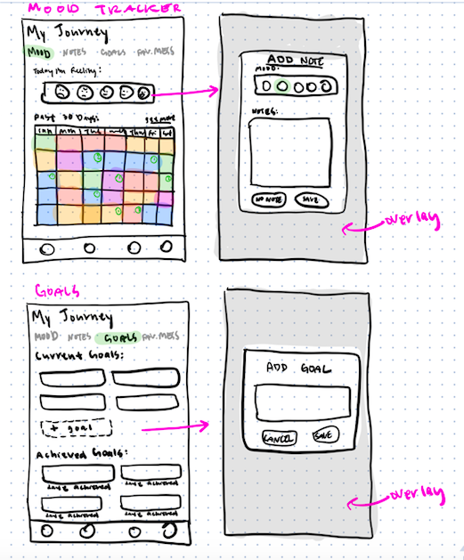
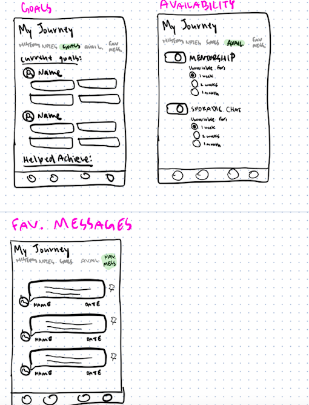
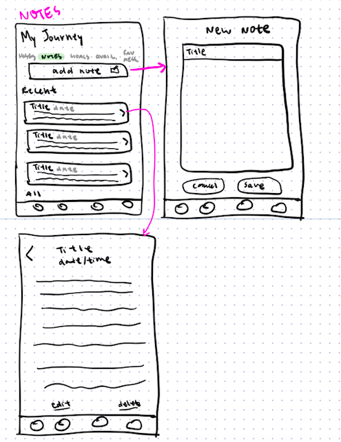

• OVERVIEW •
Wazo is a tech start-up that promotes mental wellness for college students through a peer mentorship facilitated by their mobile app. The Wazo app pairs mentors and mentees for a mentorship program with the goal of making mental health support accessible for all.
• TEAM •
CEO:
Noah Grebler Farras (main point of contact)
UX Research:
Brandon Valencia
Design: Sherry Lam, Tanvi Pati, Amanda Wu, Me
• ROLE •
As a design intern, I created a style guide for font usage across the platform, ideated and designed new features for the app, and created wireframes and mockups of the app features.
Tools: Adobe Illustrator, Adobe XD
Duration: Nov 2019 - Feb 2020
• DESIGN PROBLEM STATEMENT •
Monitoring progress towards goals has been proven to increase one's chances of success (American Psychological Association). Throughout Wazo's mentorship program, it is important to allow mentees to visualize progress in their mental health journeys and provide mentors and mentees with a means to privately document notable information or discoveries throughout the mentorship period.
• DESIGN SOLUTION •
To tackle this problem, I collaborated with my team to create a "My Journey" page that would be a place for mentees to document their mental health progrees throughout a mentorship period by tracking their mood, taking notes, saving mentors' messages, and identifying goals. For mentors, the "My Journey" feature allows them to keep track of their mentorship history and achievements.
• THE DESIGN PROCESS •
• FLOW + WIREFRAMES •
I began designing the "My Journey" page by creating a user flow of the feature. After establishing a flow, I created low-fidelity sketches of each page and then, from these sketches, transformed them into low-fidelity wireframes using Adobe Xd. After creating my own designs, I collaborated with other designers for feedback and ideation to create further iterations of the UI. Below are samples of the user-flow, lo-fi sketches, and wireframes.
• LO-FI SKETCHES •
  • HI-FI MOCKUP •
To maintain consistency across the app, we kept the a minimal aesthetic with the layout and fonts (Arial Rounded Bold for headers and Montserrat for body text) and used the app's existing green and yellow accents throughout the UI.
Mood Tracker:


To provide mentees a way to document their daily moods and visualize mood changes over time, we created a mood tracker page for users to track their moods and thoughts as they occur throughout the days and weeks. I designed illustrations of the different moods in the mood tracker and incorporated a "what are you thinking about?" text field option for users to elaborate on the details for their tracked mood.
Private Notes:
In addition to the mood tracker, I also designed this notes page UI for the app. As another means for mentees to document their mental health journey and progess, we decided to incorporate a section for users to write about anything they would like to make note, such as a revelation learned during a chat session with their mentor. Users also have the option to link their current mood. This allows users to document their emotional state at the time the note documentation is made.
Goals:

Mentees also have a page to create and manage their goals, where they can identify goals and check them off as they achieve them. I designed this page to faciliate the visualization of progress by distinctly showing them on the screen and allowing users to manually "check them off" as they are achieved to elicit the feelings of progress. Users can also include motivational messages to themselves as encouragement during difficult times.

Mentees also have choice to share goals with their mentor to allow their mentor to help them in achieving these goals. Goals shared with mentors are indicated by a lemon icon.
Pinned Messages:

Mentees and Mentors are able to pin messages from chats with their mentors. This allows users to easily access positively impactful moments from their mentorship and save them to be viewed later.
• REFLECTIONS •
Overall, I had a great experience interning at Wazo and was able to grow a lot as a designer and learn a lot from my teammates. I was able to experience the fast-paced work environment of a tech start-up and gain new insights to the world of mental health. As someone who is very passionate about both tech and mental health, I enjoyed working on this product that betters the lives of others through facilitation an accessible space for mental health support.